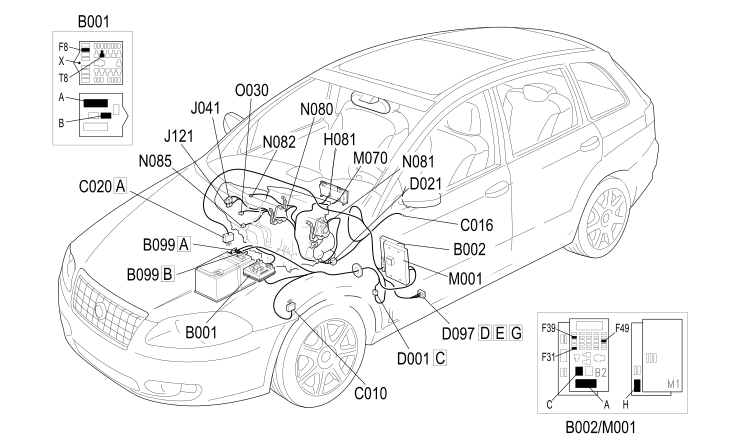

E6020 AIR CONDITIONER - COMPONENT LOCATION
- Path
- Electrical equipment > 1 ELECTRICAL FUNCTIONS > E60 CLIMATE CONTROL SYSTEM > E6020 AIR CONDITIONING > E6020 AIR CONDITIONER - COMPONENT LOCATION
- Kind
- component location drawing
- Applies to
- engines: 1.8, 2.2, 1.9 JTD 8v, 1.9 JTD 16v; all production periods
- Interactive page
- https://sloeber94.github.io/elrnDB-fCrm/en/#/194001674
Applies to: engines: 1.8, 2.2, 1.9 JTD 8v, 1.9 JTD 16v; all production periods

Component code | Description | Reference to the assembly |
|---|---|---|
ENGINE COMPARTMENT JUNCTION UNIT | ||
JUNCTION UNIT UNDER DASHBOARD | ||
MAXI FUSE BOX ON BATTERY | ||
LEFT FRONT EARTH | ||
AIR CONDITIONING UNIT EARTH | ||
PASSENGER SIDE DASHBOARD EARTH | ||
FRONT/DASHBOARD COUPLING | ||
DASHBOARD/AIR CONDITIONING-HEATER COUPLING | ||
SHORT CIRCUIT COUPLING | ||
CLIMATE CONTROL FAN OPERATION | Op. 5540C HEADLAMP/LIGHT CLUSTER ALIGNMENT CORRECTION DEVICES | |
PASSENGER COMPARTMENT AIR FAN MAXIMUM SPEED RELAY | ||
PASSENGER COMPARTMENT AIR ADDITIONAL FAN RELAY | ||
CLIMATE CONTROL SYSTEM CONTROL UNIT | ||
AIR DISTRIBUTION FLAP ACTUATOR | ||
MIXTURE FLAP ACTUATOR | ||
OUTSIDE AIR/RECIRCULATION INTAKE FLAP ACTUATOR | ||
PASSENGER COMPARTMENT AIR FAN | ||
PASSENGER COMPARTMENT AIR FAN ADJUSTMENT RESISTANCE |
Topics linked from this page (23)
- 5040C AIR CONDITIONING CASING AND COMPONENTS
- 5040D AIR CONDITIONING CONTROLS
- 5505A MULTI-FUNCTION COMPONENTS
- 5530B BATTERY AND LEADS
- 5540C HEADLAMP/LIGHT CLUSTER ALIGNMENT CORRECTION DEVICES
- B001 ENGINE COMPARTMENT JUNCTION UNIT
- B002 JUNCTION UNIT UNDER DASHBOARD
- B099 MAXI FUSE BOX ON BATTERY
- C010 LEFT FRONT EARTH
- C016 AIR CONDITIONING UNIT EARTH
- C020 PASSENGER SIDE DASHBOARD EARTH
- D001 FRONT/DASHBOARD COUPLING
- D021 DASHBOARD/AIR CONDITIONING-HEATER COUPLING
- D097 SHORT CIRCUIT COUPLING
- H081 CLIMATE CONTROL FAN OPERATION
- J041 PASSENGER COMPARTMENT AIR FAN MAXIMUM SPEED RELAY
- J121 PASSENGER COMPARTMENT AIR ADDITIONAL FAN RELAY
- M070 CLIMATE CONTROL SYSTEM CONTROL UNIT
- N080 AIR DISTRIBUTION FLAP ACTUATOR
- N081 MIXTURE FLAP ACTUATOR
- N082 OUTSIDE AIR/RECIRCULATION INTAKE FLAP ACTUATOR
- N085 PASSENGER COMPARTMENT AIR FAN
- O030 PASSENGER COMPARTMENT AIR FAN ADJUSTMENT RESISTANCE